От призвания варягов до наших дней. Пять периодов, тридцать четыре элемента: события, личности, явления и идеи.
Финальный проект · Май 2026
Событие
Личность
Явление
Идея
Период 1
Древняя Русь
IX – XV вв. · 862 – 1480
От призвания варягов до Стояния на Угре. Складывается восточнославянская православная цивилизация, отличная от католического Запада и от исламского и тюркского мира степи.
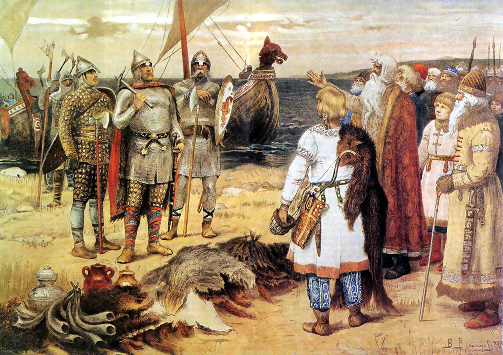
Событие
Призвание варягов
По «Повести временных лет», в 862 году новгородские словене, кривичи и финно-угорские племена пригласили варяжского князя Рюрика с дружиной править ими. С Рюрика началась династия, правившая до конца XVI века. Историческая достоверность спорна — это легендарная дата, ставшая основой норманнской теории происхождения русской государственности. 862 год считается условной точкой отсчёта истории русского государства.
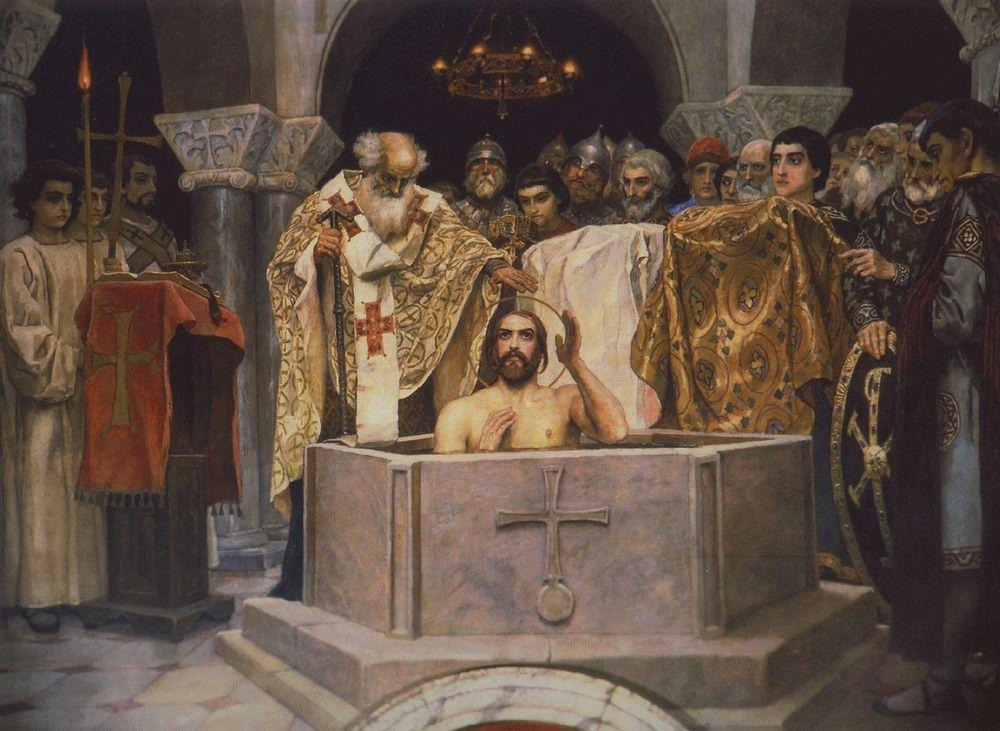
Событие
Крещение Руси
Князь Владимир Святославич принял христианство византийского обряда и сделал его государственной религией. По летописи, выбору предшествовало «испытание вер». Массовое крещение в Днепре стало символом цивилизационного выбора в пользу Византии. Появилась славянская письменность, хроникальная традиция, каменная архитектура; Русь вошла в орбиту христианской Европы. Крещение определило восточнославянскую идентичность на тысячу лет.
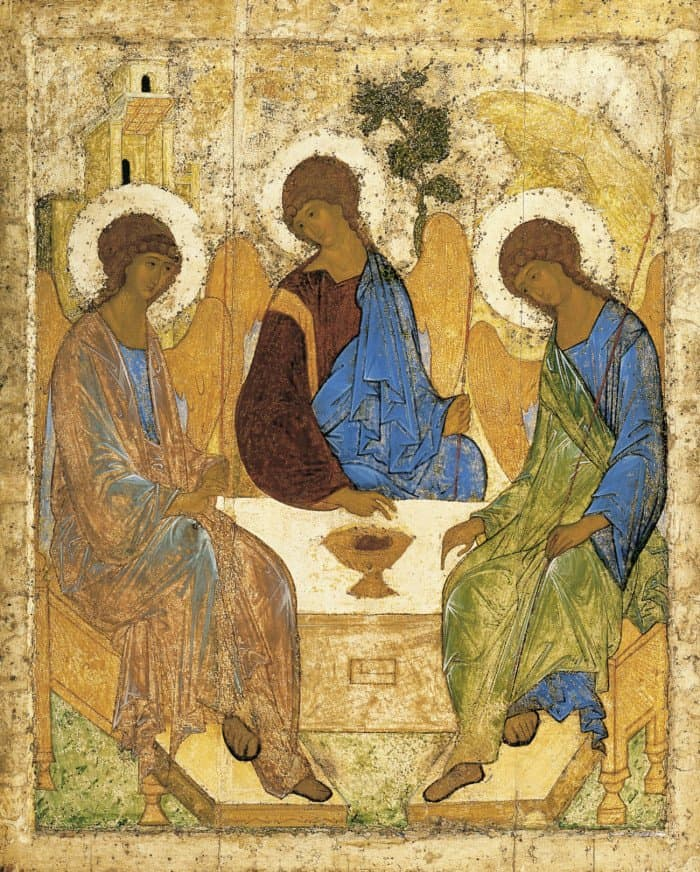
Идея
Православная цивилизационная идентичность
С крещения 988 года православие стало для Руси не просто религией, но цивилизационным выбором — в пользу Византии и против латинского Запада. Принцип «симфонии властей» определял отношения князей и церкви. После падения Константинополя эта идея трансформировалась в концепцию «Третьего Рима». Православие сформировало этику, искусство, календарь и язык русской культуры до сегодняшнего дня.
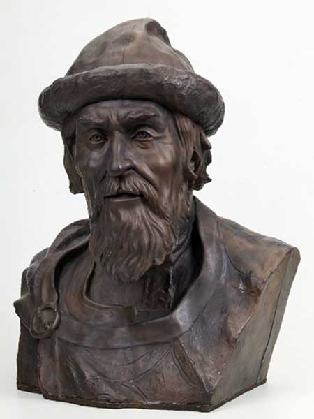
Личность
Ярослав Мудрый и «Русская Правда»
Великий князь киевский, при котором Древнерусское государство достигло расцвета. Заключал династические браки с европейскими дворами — его дочери стали королевами Франции, Венгрии и Норвегии. Построил Софийский собор в Киеве. Главное наследие — «Русская Правда», первый письменный свод законов Руси: заменил кровную месть штрафами (вирами). Свидетельство перехода от родового общества к государственно-правовому.
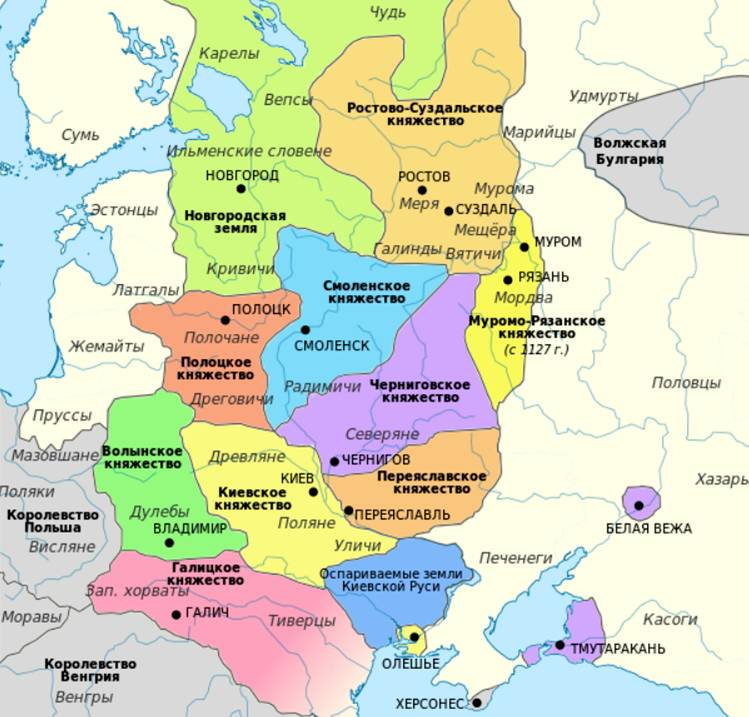
Явление
Феодальная раздробленность
После смерти Ярослава Русь распалась на удельные княжества. Любечский съезд 1097 года закрепил принцип «каждый держит отчину свою». К XII веку существовало более десятка независимых княжеств. Двойственное явление: развитие местных центров культуры, но ослабление обороноспособности, сделавшее Русь уязвимой перед монгольским нашествием. Типично средневековое явление, схожее с дроблением Каролингской империи.
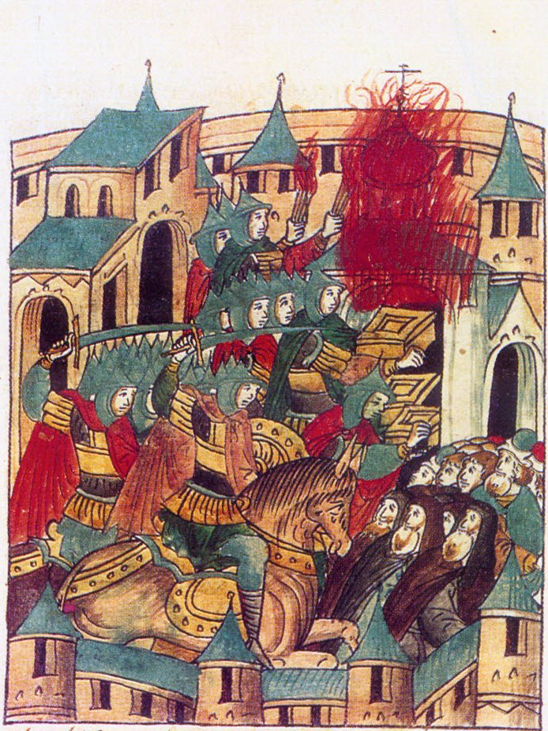
Явление
Монголо-татарское иго
Система политической и даннической зависимости русских княжеств от Золотой Орды, установленная после нашествия Батыя 1237–1240 годов. Князья получали «ярлык» от хана, платили «выход», участвовали в ордынских походах. Длилось около 240 лет. Оценки разнятся: одни видят в иге причину отставания от Европы; другие подчёркивают элементы культурного синтеза. В любом случае — ключевой фактор пути развития Руси.
Период 2
Московское государство
1480 – 1721
От свержения ордынского ига до провозглашения империи. Москва превращается в столицу единого централизованного государства, а затем — в царство. Складываются ключевые черты будущей государственности: самодержавие, идеология «Третьего Рима», крепостное право.
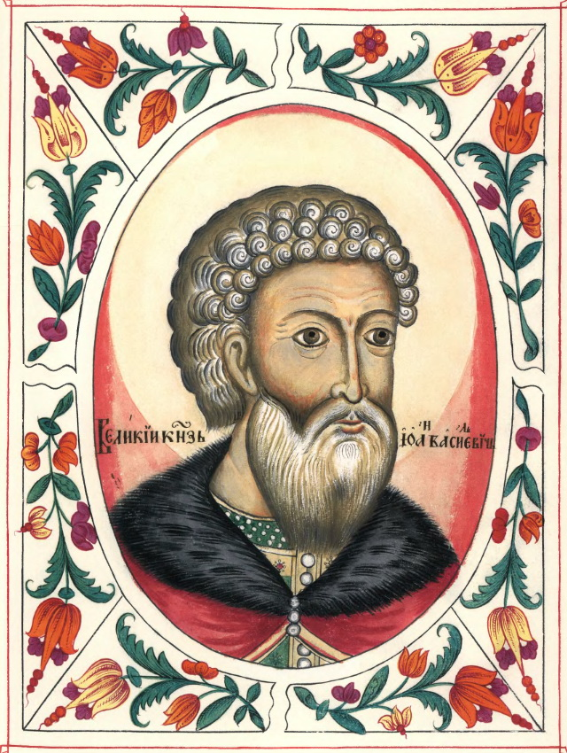
Личность
Иван III Великий
Великий князь, при котором завершилось объединение русских земель вокруг Москвы (Новгород 1478, Тверь 1485) и было свергнуто ордынское иго (1480). Принял титул «государя всея Руси», женился на Софье Палеолог, перенеся в Москву византийскую символику (двуглавый орёл). Построил Московский Кремль, принял Судебник 1497 года. Многие историки именно его, а не Петра I, считают истинным «собирателем» русских земель.
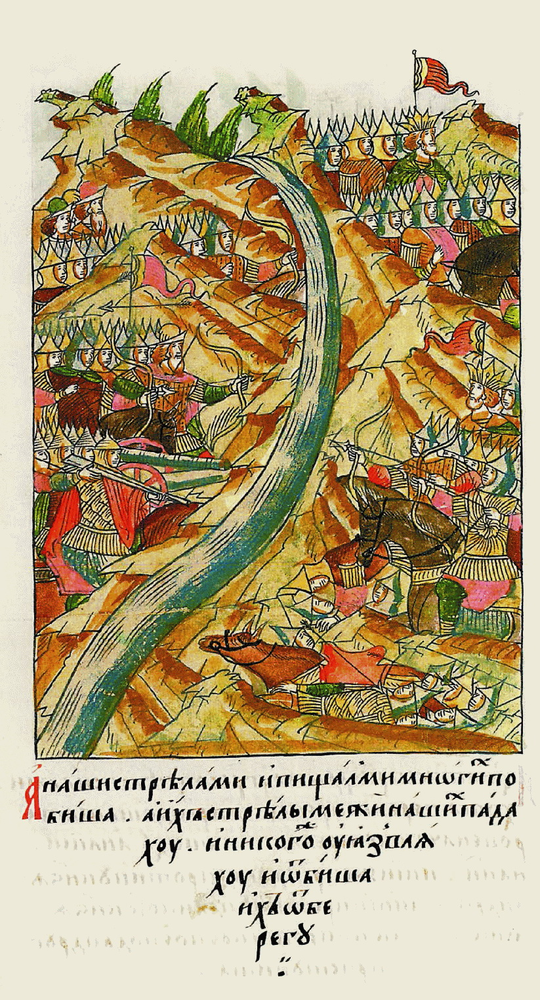
Событие
Стояние на Угре
Войска Ивана III и хана Ахмата несколько недель стояли друг против друга на реке Угре. Ахмат не решился перейти реку под огнём русской артиллерии, ждал помощи польского короля Казимира IV, которая не пришла, и в ноябре отступил. Битвы не было, но «стояние» завершило 240-летнюю зависимость от Орды. 1480 год — отправная точка существования полностью независимого Московского государства.
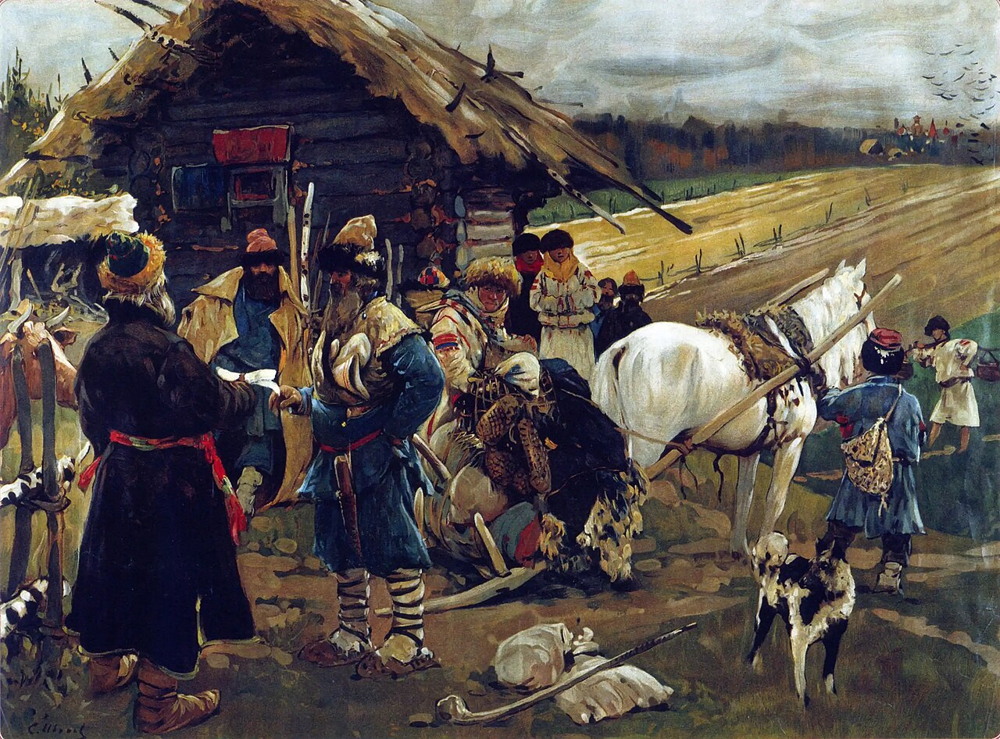
Явление
Закрепощение крестьян
Юридическое закрепление крестьян за землёй, развивавшееся с конца XV века (Судебник 1497 — ограничение Юрьевым днём) и завершившееся Соборным уложением 1649 года при Алексее Михайловиче. Уложение установило бессрочный сыск беглых — фактическое утверждение крепостного права. Цель — обеспечить служилое дворянство рабочей силой. Источник социальной отсталости, восстаний (Разин, Пугачёв) и революционных настроений.
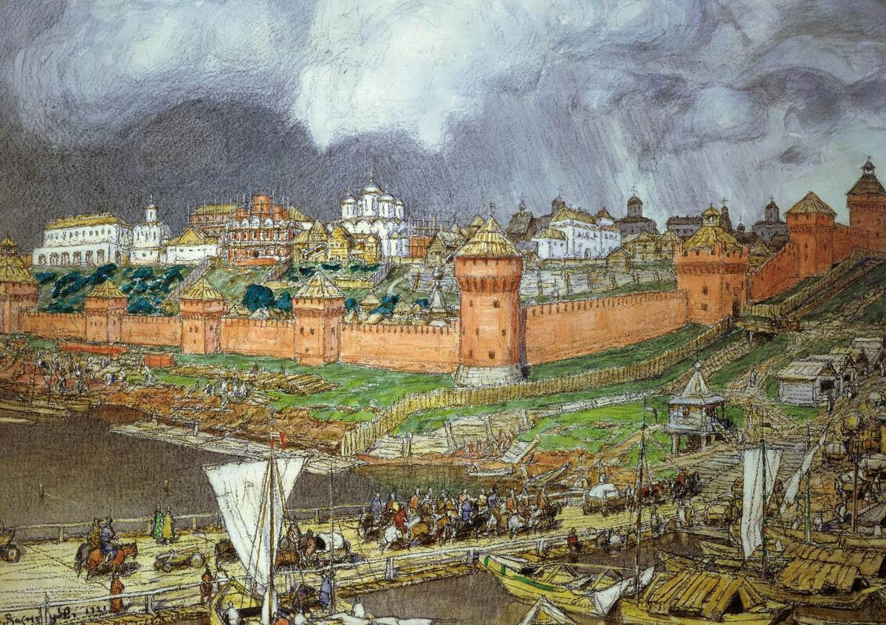
Идея
«Москва — Третий Рим»
Концепцию сформулировал псковский старец Филофей в посланиях Василию III: «Два Рима пали, третий стоит, а четвёртому не быть». После падения Рима (476) и Константинополя (1453) Москва — последний хранитель православия. Концепция дала идеологическое обоснование принятия Иваном IV царского титула (1547) и учреждения Московского патриархата (1589). Шаблон мессианского самовосприятия прослеживается до сегодняшнего дня.
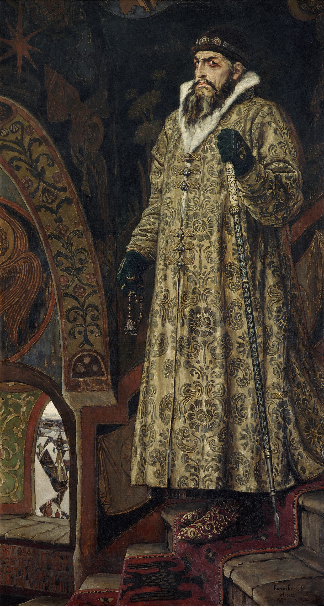
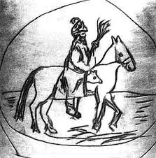
Явление
Опричнина Ивана Грозного
Система управления Ивана IV, разделившая страну на «опричнину» (личный удел царя с особым войском) и «земщину». Опричное войско носило чёрную форму, к сёдлам прикрепляли собачьи головы и мётлы — символы «выгрызания и выметания» измены. Цель — борьба с боярской «изменой». Результат: массовые казни, разорение Новгорода (1570), экономический упадок. Первый прецедент массового государственного террора против собственного населения.
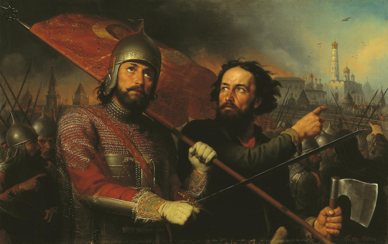
Событие
Смутное время
Системный кризис после пресечения династии Рюриковичей. Включал династический кризис, гражданскую войну, голод 1601–1603 годов, самозванцев (Лжедмитрии I и II), польскую и шведскую интервенцию, оккупацию Москвы поляками (1610–1612). Освобождение Москвы Вторым ополчением Минина и Пожарского (октябрь 1612) и избрание Земским собором Михаила Романова (1613) положили начало 300-летней династии Романовых.
Период 3
Российская империя
1721 – 1917
От провозглашения империи Петром I до Февральской революции. Россия становится одной из великих европейских держав. Внутри страны — мучительный поиск пути модернизации: реформы Петра, просвещённый абсолютизм, Великие реформы Александра II, спор о цивилизационном выборе.
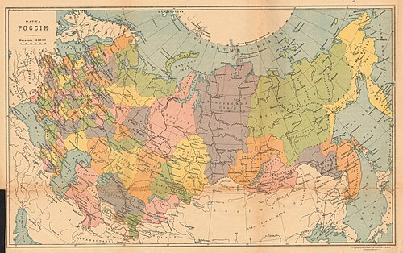
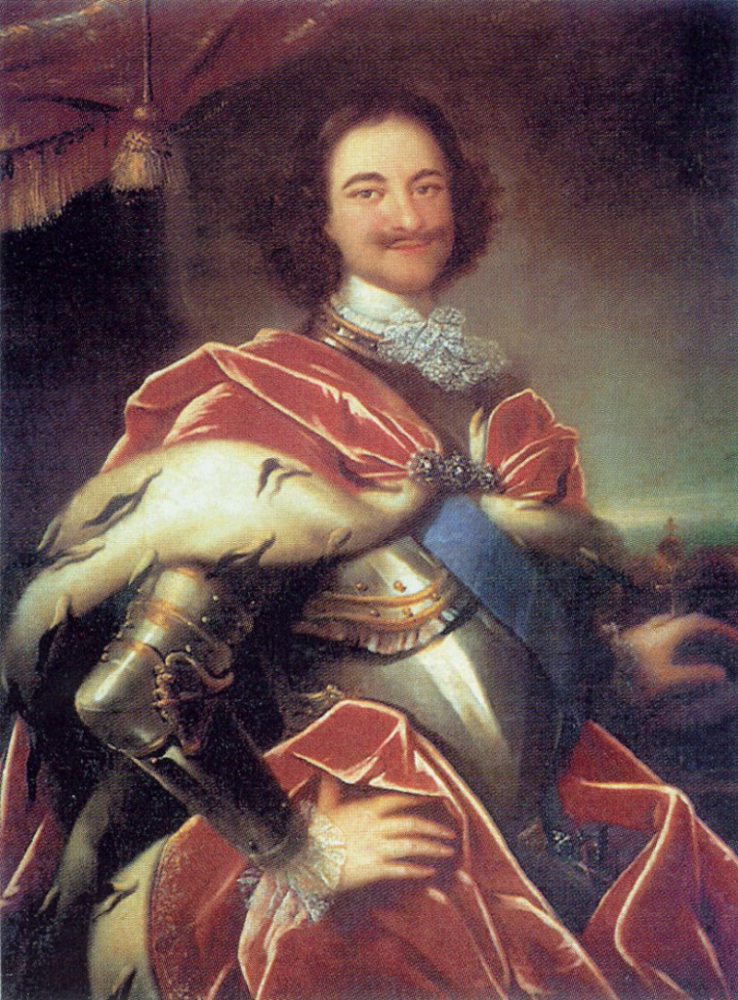
Личность
Пётр I и его реформы
Первый император Всероссийский. Цель — модернизация России по западному образцу. Реформировал армию, создал флот, ввёл подушную подать, Табель о рангах, Сенат, коллегии. Основал Санкт-Петербург (1703). Цена реформ — массовая мобилизация, гибель десятков тысяч на стройке Петербурга, восстания, культурный раскол на «европейскую» элиту и «русское» крестьянство. Получил империю европейского уровня ценой колоссального напряжения нации.
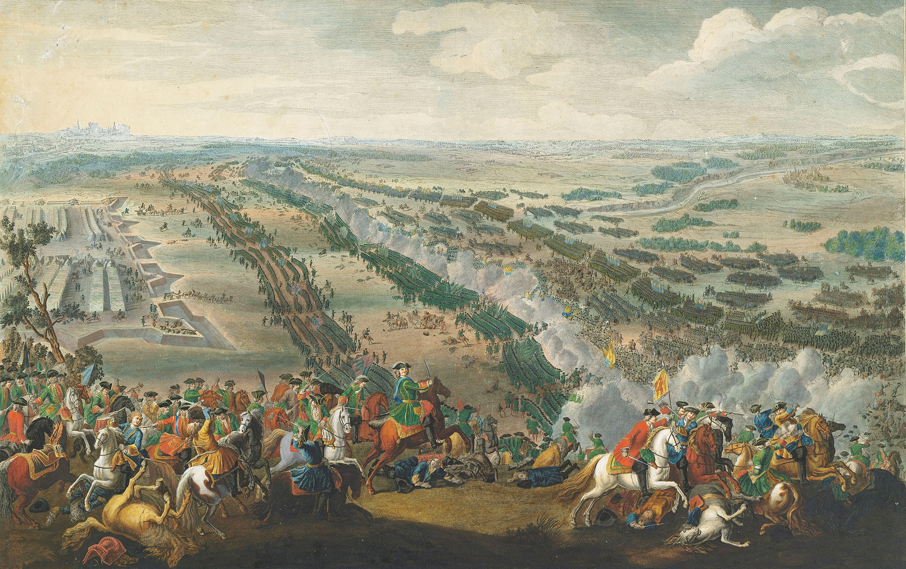
Событие
Полтавская битва
Решающее сражение Северной войны между Россией и Швецией. Армия Карла XII, считавшаяся непобедимой и разгромившая Россию под Нарвой (1700), была разгромлена под Полтавой. Швеция утратила статус великой державы, Россия стала ведущей силой на Балтике. Ништадтский мир (1721) закрепил за Россией Прибалтику, Пётр I принял титул «Императора Всероссийского». Один из главных военных триумфов русской истории.
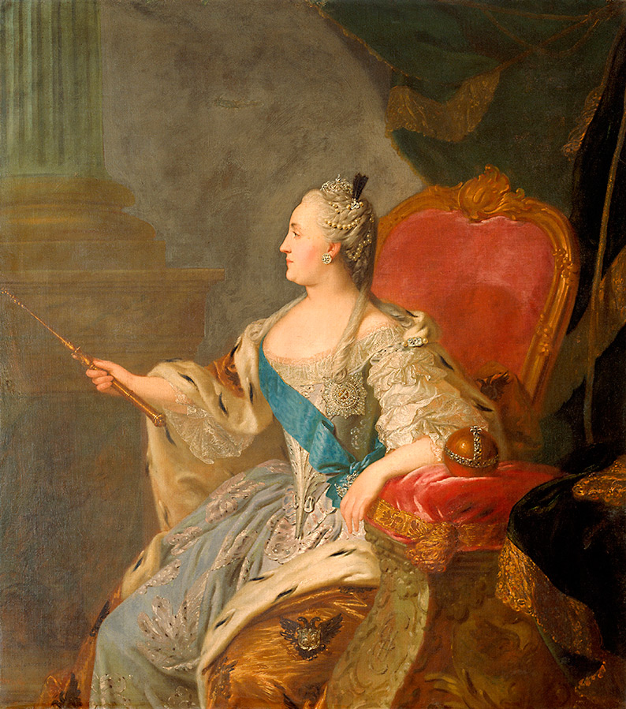
Идея
Просвещённый абсолютизм Екатерины II
Сочетание идей Просвещения с сохранением абсолютной власти. Екатерина переписывалась с Вольтером и Дидро, написала «Наказ» с цитатами из Монтескьё, провела губернскую реформу и секуляризацию. На словах — идеалы законности; на деле — расширение крепостного права, разделы Польши, подавление Пугачёва. Противоречие между декларируемыми идеалами и реальностью модернизации «сверху» в крепостной стране.
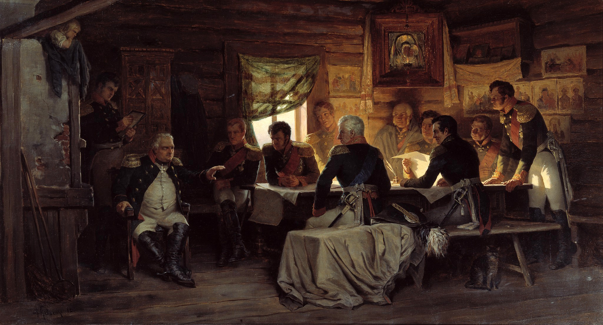
Событие
Отечественная война 1812
Великая армия Наполеона (более 600 000 человек) вторглась в Россию в июне 1812 года. Армия Кутузова отступала, заманивая противника вглубь. Бородинское сражение (26 августа) не дало решающего результата. После оставления Москвы и её пожара армия Наполеона была уничтожена холодом, голодом и партизанами. Война стала народной и моментом небывалого национального подъёма, вдохновила декабристов и роман «Война и мир». Россия стала «жандармом Европы».
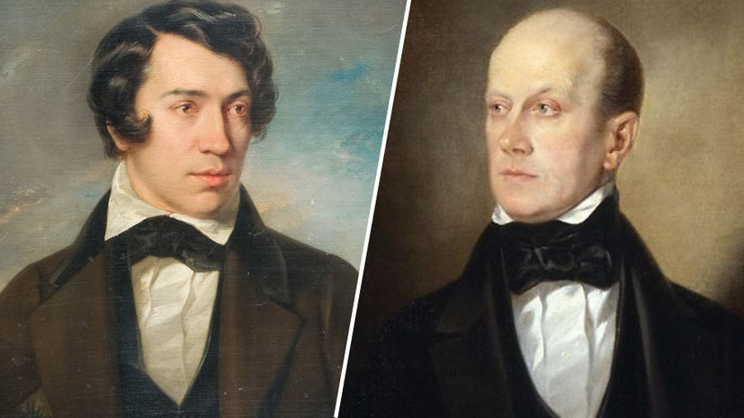
Явление
Западники и славянофилы
Два направления русской общественной мысли. Западники (Грановский, Кавелин, Белинский) — Россия часть Европы, путь её — догоняющая модернизация по западному образцу. Славянофилы (Хомяков, Киреевский, Аксаковы) — у России собственный путь, опирающийся на православие, общину и «соборность». Это вечный спор о цивилизационном выборе, но настоящий накал он получил позже — после проигранной Крымской войны, реформ и революционных потрясений начала XX века.
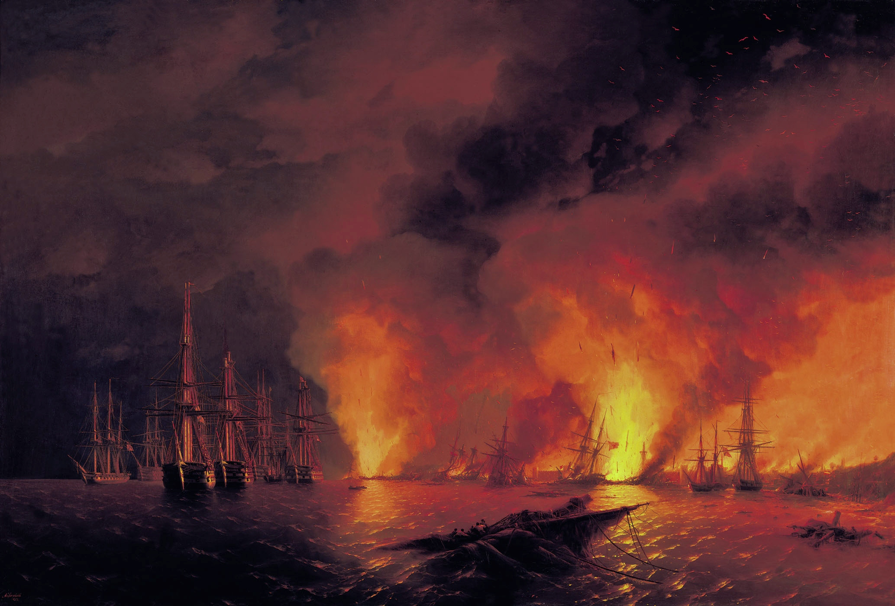
Событие
Крымская война
Война России против коалиции Великобритании, Франции, Османской империи и Сардинии. Поводом послужил спор о святых местах в Палестине, реальной причиной — обострение Восточного вопроса и страх европейских держав перед усилением России на Балканах. Ключевые события — оборона Севастополя (1854–1855), гибель адмиралов Нахимова и Корнилова, унизительный Парижский мир (1856) с запретом держать флот на Чёрном море. Поражение обнажило технологическое отставание николаевской России: парусный флот против пароходов, гладкоствольные ружья против нарезных. Шок от проигрыша запустил «Великие реформы» Александра II — отмену крепостного права, судебную, земскую, военную реформы. Стал ключевым аргументом «западников» и одновременно стимулом для нового витка дискуссии о русском пути.
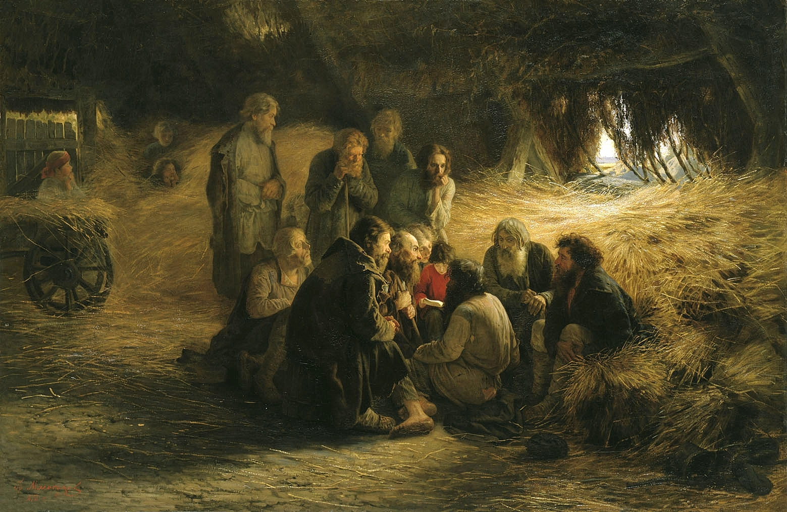
Событие
Отмена крепостного права
Манифест Александра II освободил около 23 млн помещичьих крестьян от личной зависимости. Последовал за поражением в Крымской войне, показавшим отсталость крепостной России. Реформа половинчатая: личная свобода, но землю надо выкупать (платежи отменили только в 1907). Открыла дорогу остальным «Великим реформам». Неполнота реформы породила «аграрный вопрос», ставший причиной революций 1905 и 1917 годов.
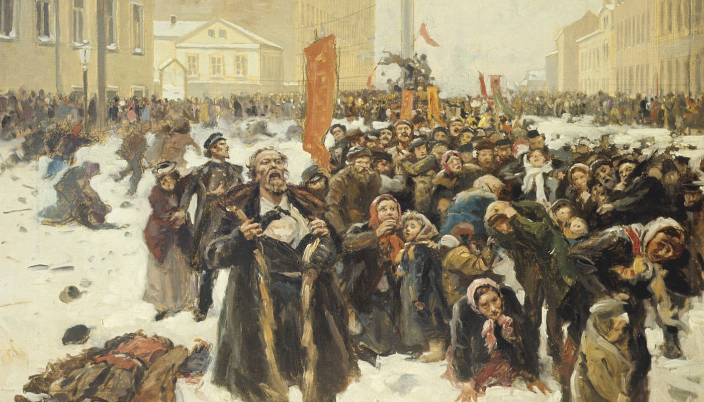
Событие
Русско-японская война и революция 1905 года
Задуманная как «маленькая победоносная война», способ отвлечь общество от внутренних проблем, она обернулась катастрофой: падение Порт-Артура (1904), разгром при Цусиме (1905), Портсмутский мир с потерей Южного Сахалина. На фоне военных поражений и расстрела мирного шествия 9 января («Кровавое воскресенье») страну охватили массовые забастовки, крестьянские бунты, восстание на броненосце «Потёмкин», декабрьское восстание в Москве. Манифест 17 октября 1905 года даровал гражданские свободы и учреждал Государственную думу — впервые в истории России появился парламент. Революция показала глубину социальных противоречий: революционные кружки, наследники народников и западников, вырвались в массовую политику. Фактически — генеральная репетиция 1917 года.
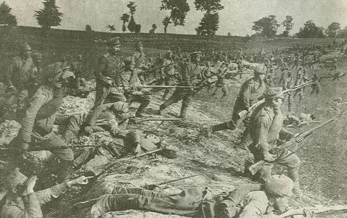
Событие
Первая мировая война
В августе 1914 Россия вступила в войну на стороне Антанты против Германии и Австро-Венгрии — формально ради защиты православной Сербии. Восточный фронт растянулся от Балтики до Чёрного моря. Брусиловский прорыв (1916) стал единственным крупным успехом; в целом война шла тяжело: миллионные потери, кризис снабжения, «министерская чехарда», скандалы вокруг Распутина. Война подорвала экономику и окончательно дискредитировала монархию в глазах элиты и города. В феврале 1917 года петроградские очереди за хлебом переросли в революцию, в течение недели Николай II отрёкся от престола — закончилось 300-летнее правление Романовых. Война, начатая под лозунгами славянского братства, обернулась крушением империи и стала непосредственным прологом Октябрьской революции.
Период 4
Советский период
1917 – 1991
От Октябрьской революции до распада СССР. 74 года, в течение которых на месте Российской империи существовало первое в мире социалистическое государство. Включает Гражданскую войну, сталинскую модернизацию, ВОВ, статус сверхдержавы, космические достижения и попытку реформ Горбачёва.
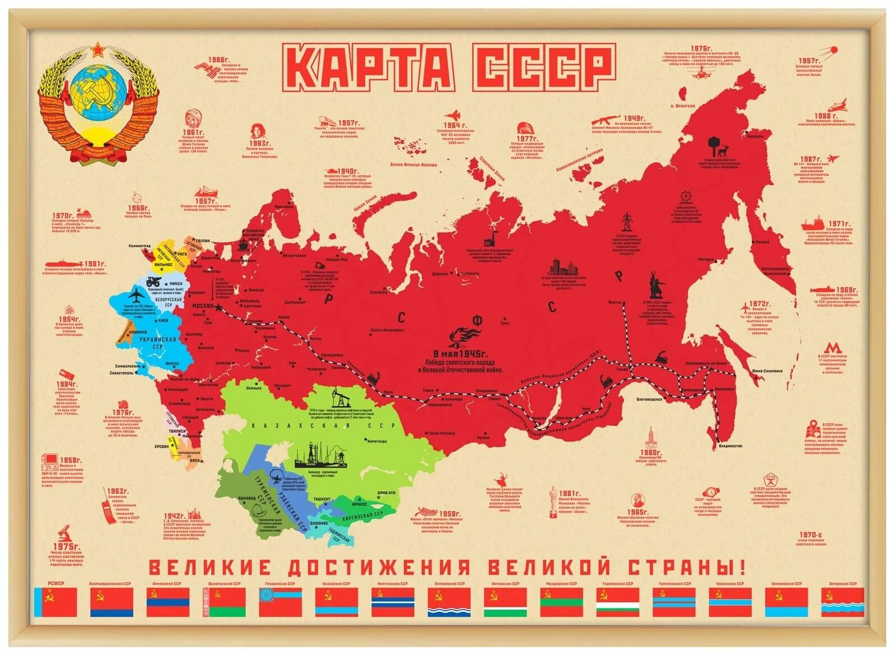
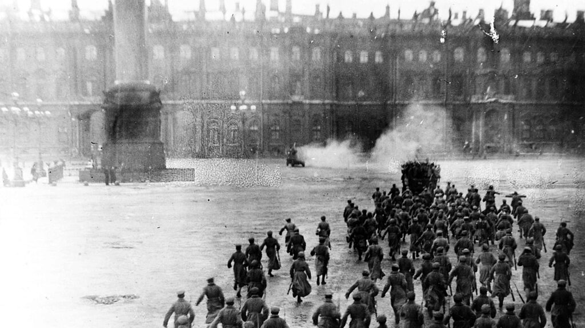
Событие
Октябрьская революция
Вооружённое восстание большевиков в Петрограде, свергнувшее Временное правительство. Спланировано Военно-революционным комитетом во главе с Троцким, идейно — Лениным. Штурм Зимнего, передача власти II съезду Советов. Декреты о мире и о земле. Цель — построение социализма; результат — первое в мире социалистическое государство, 5-летняя гражданская война (1918–1922) и эмиграция миллионов. Переломный момент XX века.
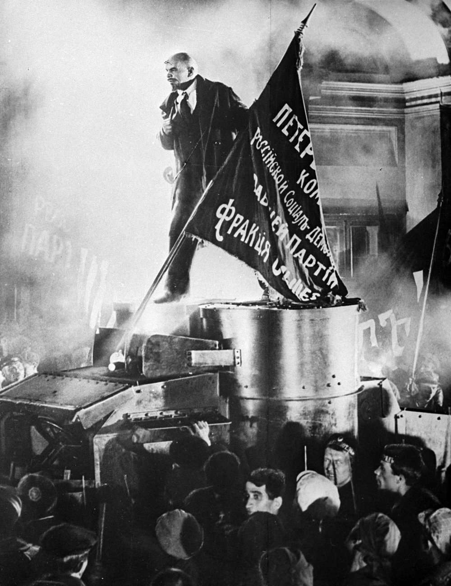
Личность
В. И. Ленин
Создатель партии большевиков, идеолог и организатор Октябрьской революции, основатель Советского государства. Разработал концепцию партии «нового типа». После 1917 — глава Совнаркома: «военный коммунизм» (1918–1921), затем НЭП (1921). Подписал Брестский мир, утвердил создание СССР (1922). Хотел общество без эксплуатации; получил государство, ставшее тоталитарным при Сталине. Глобальное влияние на XX век.
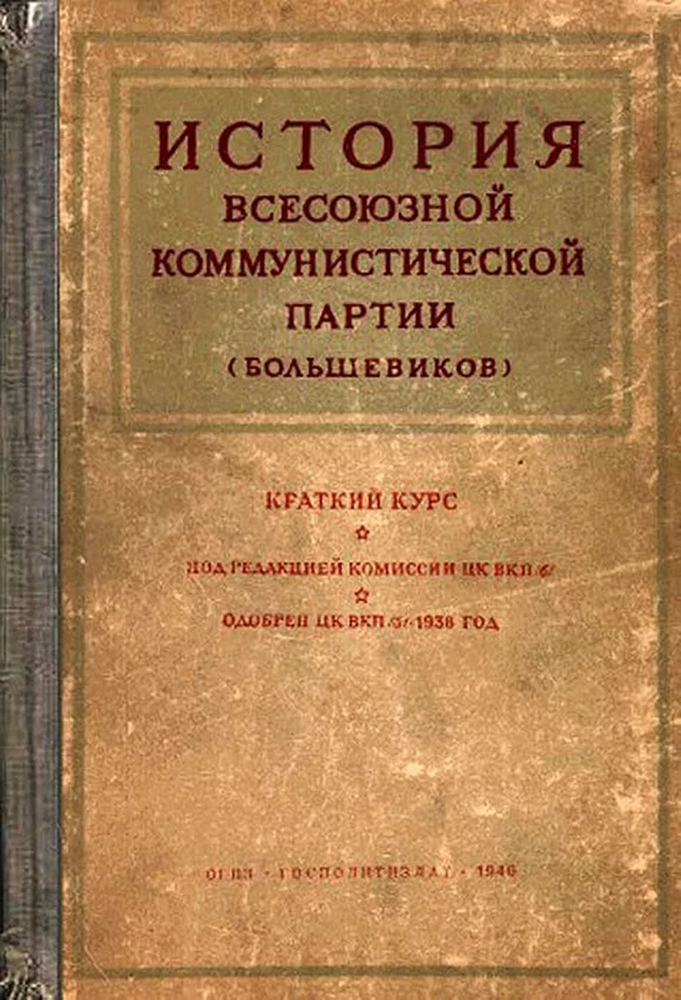
Идея
Марксизм-ленинизм как государственная идеология
Официальная идеология СССР: соединение марксистской теории классовой борьбы с ленинской концепцией пролетарской революции и партии-авангарда. Закреплена в Программе ВКП(б)/КПСС и советских конституциях, обязательно преподавалась во всех вузах в курсах истмата, диамата и научного коммунизма. Декларировала построение бесклассового коммунистического общества. На практике обосновывала монополию КПСС, плановую экономику и подавление инакомыслия как «буржуазной идеологии». Идея «реального социализма» и неизбежной победы над капитализмом определяла внутреннюю и внешнюю политику СССР на протяжении 74 лет, особенно в эпоху Холодной войны.
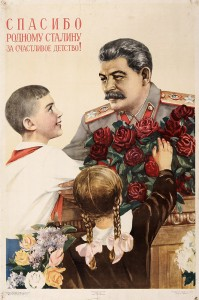
Явление
Сталинизм
Тоталитарная система и форсированная модернизация. Индустриализация (пятилетки) — тысячи заводов, металлургия. Коллективизация (1929–33) — насильственное объединение крестьян в колхозы — привела к голоду 1932–33 годов с миллионами жертв. «Большой террор» 1937–38: ~700 тыс. расстреляны, миллионы — через ГУЛАГ. Цель — «социализм в одной стране»; результат — победа в ВОВ, сверхдержава, но колоссальные жертвы.
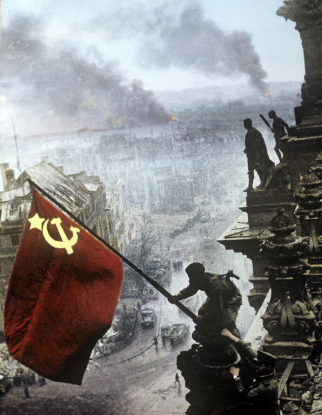
Событие
Великая Отечественная война
Война СССР против нацистской Германии. Началась 22 июня 1941 года внезапным нападением. После катастроф 1941–42 — переломные победы: Москва (1941), Сталинград (1942–43), Курск (1943). В мае 1945 Красная армия взяла Берлин. Цена: ~27 млн погибших советских граждан. Центральное событие советской исторической памяти и ключевой элемент российской идентичности до сегодняшнего дня. Основа международного авторитета СССР.
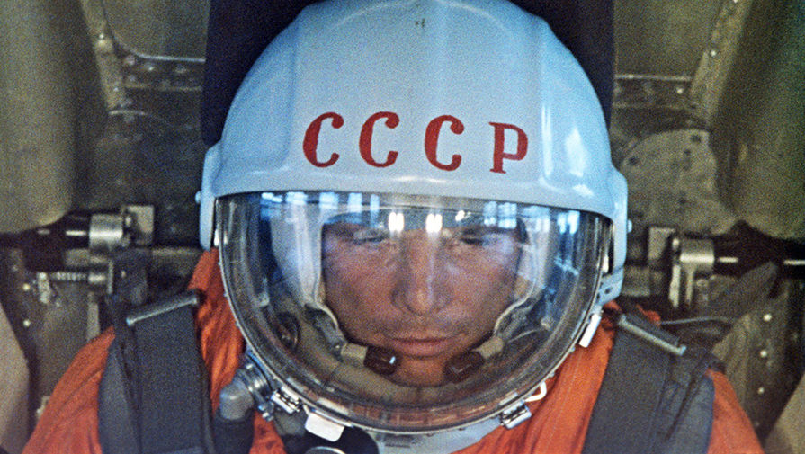
Событие
Полёт Юрия Гагарина
Первый в истории человечества пилотируемый космический полёт. На корабле «Восток-1» Гагарин совершил виток вокруг Земли за 108 минут. Кульминация советской космической программы (Спутник-1 в 1957) и крупнейшая пропагандистская победа в Холодной войне. Одно из немногих событий XX века с однозначно позитивной оценкой в любых политических координатах.
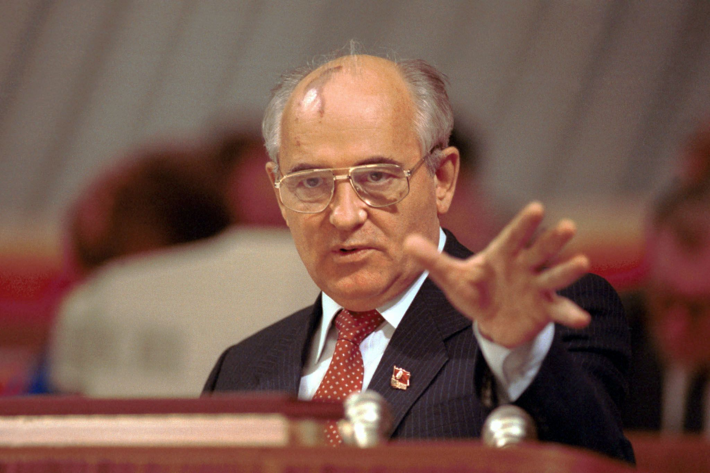
Явление
Перестройка
Реформы М. С. Горбачёва: «ускорение», «гласность», «новое мышление». Цель — модернизировать социализм. Результат разошёлся с целями: гласность открыла обсуждение преступлений сталинизма; экономические реформы не помогли (дефицит, талоны); политическая либерализация привела к параду суверенитетов. Августовский путч ГКЧП и Беловежские соглашения — конец СССР. Пример того, как попытка реформ привела не к обновлению, а к крушению системы.
Период 5
Новейшее время
1991 – наши дни
Период существования Российской Федерации как независимого государства. Болезненный переход от плановой экономики к рыночной, формирование новых институтов, две чеченские войны, экономический рост 2000-х, конфликт с Западом и постсоветскими соседями. Изложение придерживается принципа «декларируемые цели → реализация → последствия».
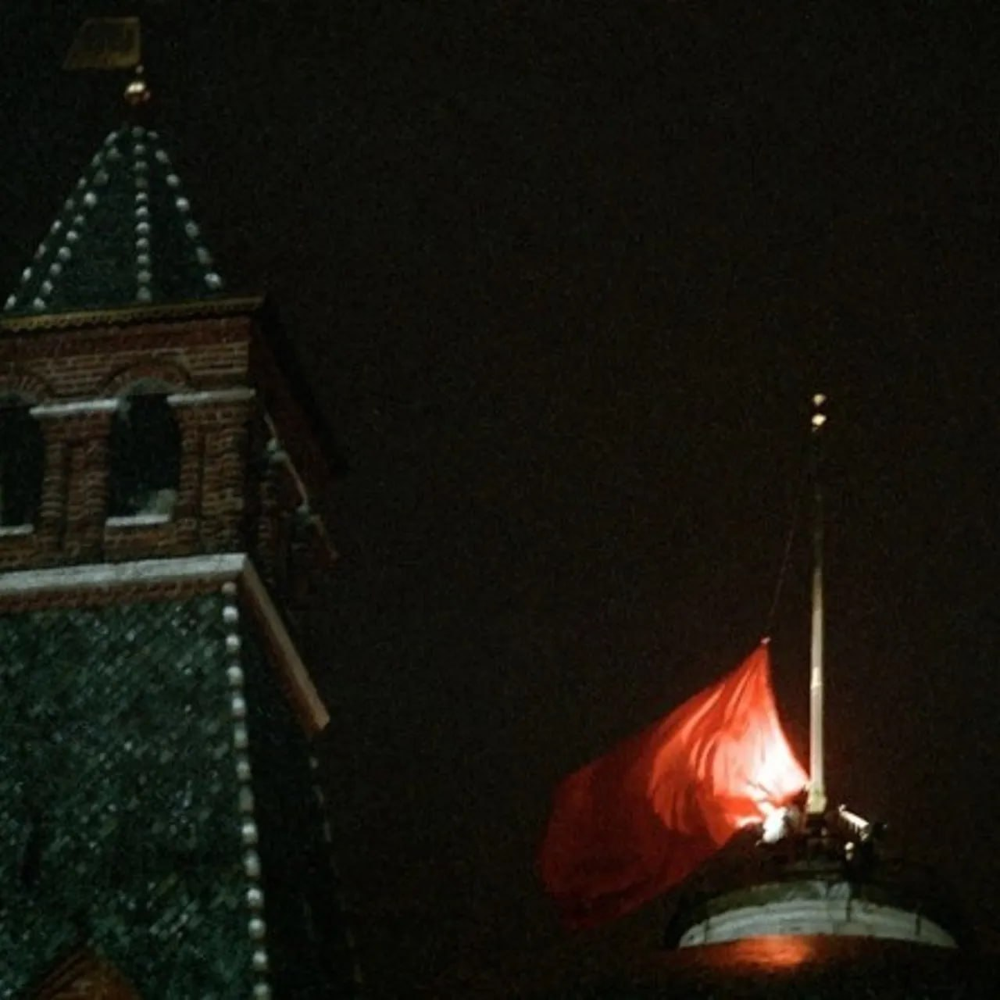
Событие
Распад СССР
В декабре 1991 года лидеры России (Ельцин), Украины (Кравчук) и Беларуси (Шушкевич) подписали в Беловежской Пуще соглашение о роспуске СССР. 25 декабря Горбачёв ушёл в отставку, над Кремлём спущен советский флаг. На месте СССР возникло 15 независимых государств. Распад без масштабной войны, но повлёк миллионы перемещённых лиц, серию региональных конфликтов и глубокую экономическую депрессию 1990-х.
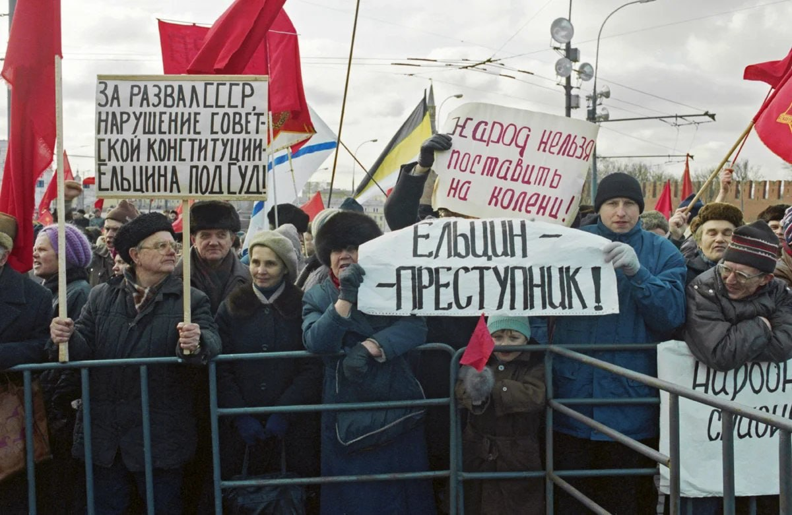
Личность
Борис Ельцин
Первый президент РФ. Бывший член Политбюро, опала при Горбачёве сделала его символом оппозиции «номенклатуре». В августе 1991 выступил против ГКЧП, в декабре устроил Беловежский путч, оформивший роспуск СССР. Возглавил радикальные реформы 1992 года. В октябре 1993 разрешил политический кризис расстрелом Верховного Совета. Начал Первую чеченскую войну (1994–96). В декабре 1999 досрочно ушёл в отставку, передав власть Путину.
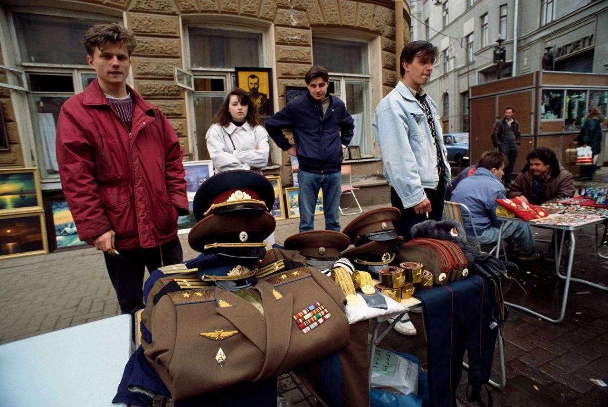
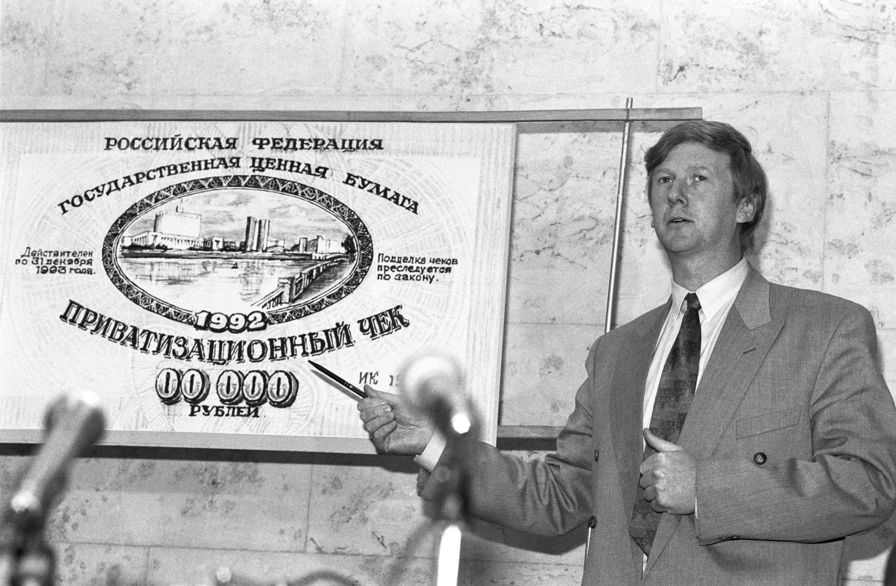
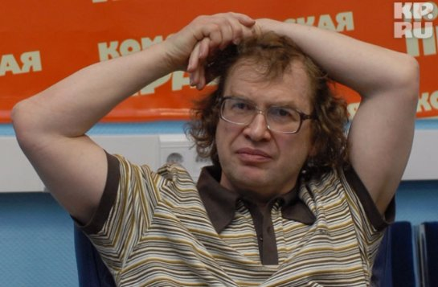
Явление
«Шоковая терапия» и приватизация
Радикальные реформы Гайдара–Чубайса: либерализация цен (январь 1992), ваучерная приватизация (1992–94), залоговые аукционы (1995–96). Цель — переход к рыночной экономике. Результаты двойственны: частная собственность, рыночные институты — но гиперинфляция (~2500%), обесценивание сбережений, падение ВВП на 40% к 1998, дефолт, формирование «олигархов», рост бедности. «Лихие 90-е» — обоснование консервативного поворота 2000-х.
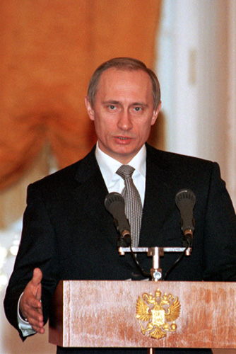
Личность
Владимир Путин
Второй и четвёртый президент РФ. Бывший офицер КГБ, директор ФСБ. Пришёл к власти на фоне Второй чеченской войны и роста цен на нефть. Первый период (2000-е): «стабилизация», ослабление олигархов, рост доходов. Второй период (с 2012): консервативный поворот, конфликт с Западом, Крым (2014), Сирия, СВО в Украине с 2022. Конституционные поправки 2020 обнулили его сроки. Определяющая фигура российской политики последней четверти века.
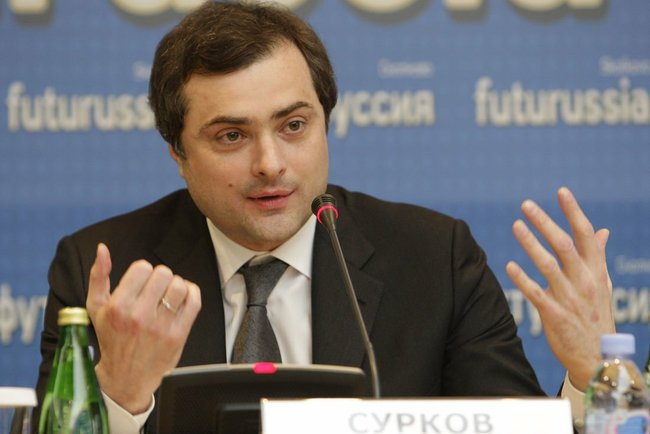
Идея
«Суверенная демократия» и «русский мир»
Концепция «суверенной демократии», сформулированная в 2006 году Владиславом Сурковым, была попыткой отделить «российскую» демократию от западной: суверенитет важнее заимствованных извне процедур. Идея стала реакцией на «цветные революции» 2003–2005, но не прижилась — Суркова со временем отстранили, а его конструкция уступила место другой идеологии — «русскому миру».
Событие
Российско-украинский конфликт
В феврале–марте 2014, после смены власти в Киеве в результате Евромайдана, Россия присоединила Крым. С весны 2014 — конфликт на востоке Украины. 24 февраля 2022 — «специальная военная операция»: полномасштабное вторжение. Заявленные цели Москвы — «демилитаризация», защита русскоязычных, предотвращение расширения НАТО. К 2026 РФ контролирует ~1/5 территории Украины, сотни тысяч жертв с обеих сторон. Май 2026 — переговоры при США, мира пока нет.